Cybersecurity Club, IIIT Kottayam proudly presents ApoorvCTF 3.0! Get ready for the ultimate battle of wits as we bring you the third edition of our flagship Jeopardy-style CTF - completely online!
Official writeup: Here
Mục lục:
- Reverse Engineering:
+
Holy Rice
+
Rusty Vault
+
Evil Rice
Xem qua thì file rice-cooker là file ELF, đơn giản là yêu cầu nhập password và check. Giờ mình sẽ mở nó trong IDA Pro.
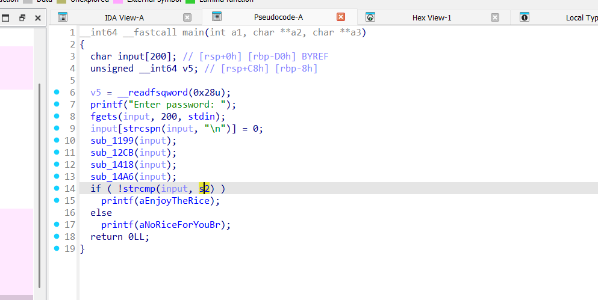Input được chạy qua 4 function, và cuối cùng được so sánh với chuỗi byte s2. Giờ mình sẽ xem qua từng function từ dưới lên.
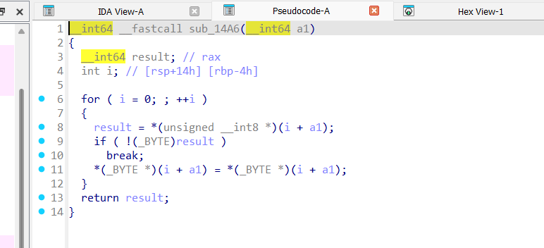Hàm thứ 4 chúng ta có thể bỏ qua vì hàm này chỉ gán lại giá trị chuỗi a1
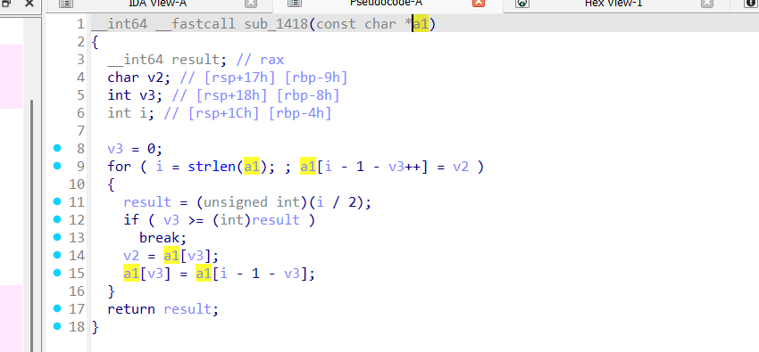Hàm thứ 3 đơn giản là đảo ngược chuỗi đầu vào. Chúng ta có thể đọc mã C ở trên để hiểu thuật toán, hoặc đơn giản là chuyển code trên thành code Python và chạy thử với một chuỗi ngẫu nhiên.
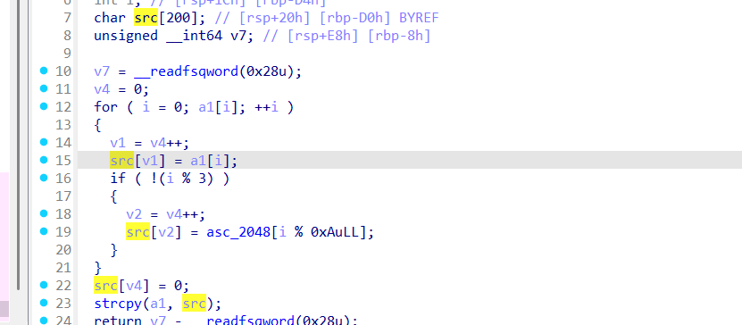Hàm thứ 2 thực hiện thêm kí tự rác. Vị trí cần xoá để lấy chuỗi gốc là vị trí 1, 5, 9,... Chỉ cần xoá các kí tự rác này là được.
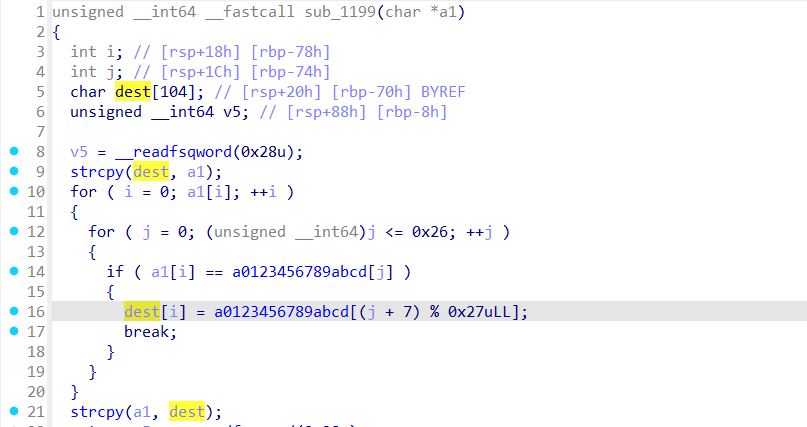Hàm thứ 1 này tạo mảng dest làm kết quả trả về. Mỗi phần tử của mảng dest được sửa đổi dựa trên phần tử tương ứng của chuỗi đầu vào. Chúng ta cần viết code reverse hàm này. Chuỗi byte a01... cũng đã được cho trước. Tuy nhiên điểm đặc biệt là mảng dest ban đầu được khởi tạo là chuỗi đầu vào, nên nếu chuỗi đầu vào có kí tự không trong mảng a01... thì sẽ không bị sửa đổi.
Code: Here
Mở program trong IDA được code như sau
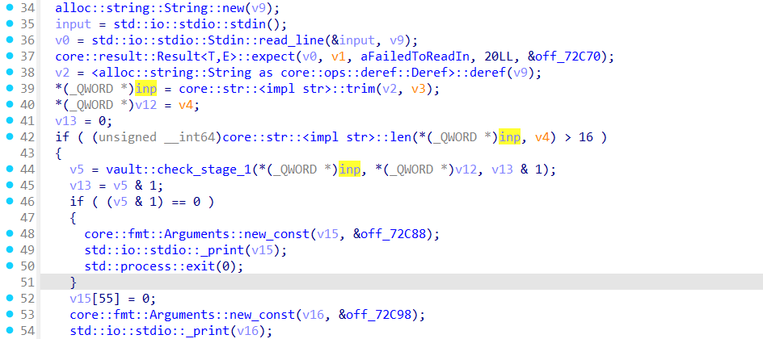Input được so sánh độ dài phải > 16, sau đó đi qua hàm check_stage_1. Nếu kết quả trả về false thì kết thúc chương trình.
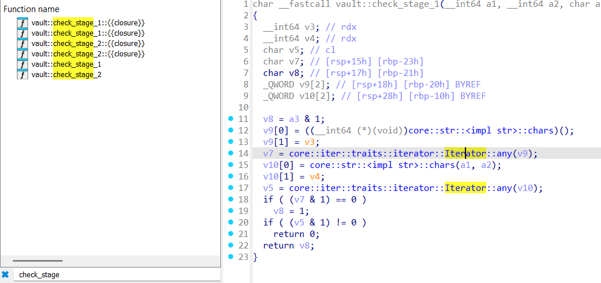Khi mở hàm check_stage_1 sẽ thấy hàm này dùng any() để kiểm tra giá trị đầu vào. Dùng ô tìm kiếm function bên trái chúng ta có thể thấy được 2 trait dùng cho check_stage_1. 2 trait đó sẽ kiểm tra từng kí tự chuỗi có phải lowercase và digit hay không, và chúng ta cần cả 2 trait này trả về false. Input thoả mãn check_stage_1 có thể ví dụ như: "AAAAAAAAAAAAAAAAAAAA".
Nhưng chúng ta sẽ lại mắc ở check_stage_2. Hàm này còn không xuất hiện ở decompiled code của IDA Pro. Nhưng nếu xem cross reference của hàm này thì chúng ta sẽ thấy được hàm check_stage_2 được gọi ở hàm main. Tuy nhiên chúng ta cũng có thể đọc được hàm vì đã tìm thấy hàm này bằng thanh search function bên trái. Đọc qua thì cũng na ná cách hàm check_stage_1 hoạt động.
Có thể thấy IDA không decompile được hết program này nên mình thường sẽ dùng một decompiler khác như Ghidra để xem code. May mắn là Ghidra đã decompile được toàn bộ code main như ảnh dưới.
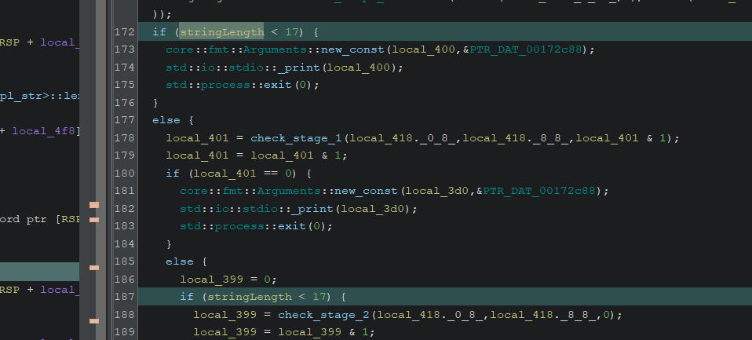Tuy nhiên khi mở bằng Ghidra sẽ thấy phần kiểm tra độ dài chuỗi trước check_stage_1 và check_stage_2 mâu thuẫn với nhau. Một cái yêu cầu chuỗi dài hơn 16, một cái yêu cầu chuỗi ngắn hơn 17. Để vượt qua đoạn này có lẽ chúng ta cần debug và chỉnh sửa giá trị thanh ghi tại instruction cmp.
Nhưng tạm thời bỏ qua đoạn kiểm tra stage 1-3 này, mình sẽ xem phần sau chương trình làm gì.
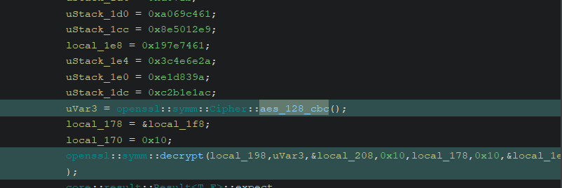Vậy là chương trình sẽ thực hiện decrypt ciphertext từ key và iv theo thuật toán AES CBC. Ở ngay bên trên phần mình highlight chúng ta có thể thấy được nhiều chuỗi byte được gán, đó chính là key, iv và ct. Ở hàm decrypt có các tham số với size 0x10, 0x30. Chúng ta có thể trích xuất byte dễ hơn khi xem thông qua hex view của IDA Pro vì thứ tự byte ở Ghidra bị sai, kể cả ở IDA View cũng vậy.
Sau đó thực hiện decrypt và chúng ta sẽ lấy được flag. Code: Here
Đối với bài này, mở trong IDA Pro chúng ta sẽ được code như sau.
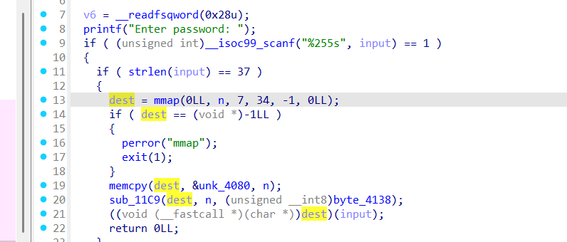Tiếp tục là nhập password và kiểm tra. Password phải có độ dài 37. Mảng dest được khởi tạo với kích thước n, click vô n chúng ta thấy được kích thước khởi tạo là 0xA9.
Sau đó chuỗi byte lưu ở unk_4080 sẽ được đẩy vào dest với kích thước n byte. Hàm sub_11C9 sẽ thực hiện sửa đổi gì đó với phần nhớ này, để ý tham số thứ 3 của hàm (byte_4138) là một byte có giá trị 0xAA. Cuối cùng chương trình thực thi thẳng vùng nhớ dest.
Có thể thấy vùng nhớ dest lưu trữ shellcode (code assembly) và chúng ta cần lấy nó ra và đọc hiểu. Để lấy ra thì chỉ cần viết lại hàm sub_11C9 bằng Python và chạy với chuỗi byte unk_4080. Hàm sub_11C9 này đơn giản là xor từng byte với byte 0xAA thôi nên mình sẽ không đưa code lên đây. Sau đó chúng ta lưu kết quả vào file bytecode.bin.
Để xem file này, mình sử dụng Ghidra, chọn language là x86 intel-amd 64-bit. Khi mở lên Ghidra sẽ không biết entry point ở đâu, chúng ta cần chọn dòng đầu tiên, click chuột phải và chọn dissassemble. Sau đó thì double click dòng bất kỳ và kết quả decompile sẽ hiện ra ở phía bên phải.
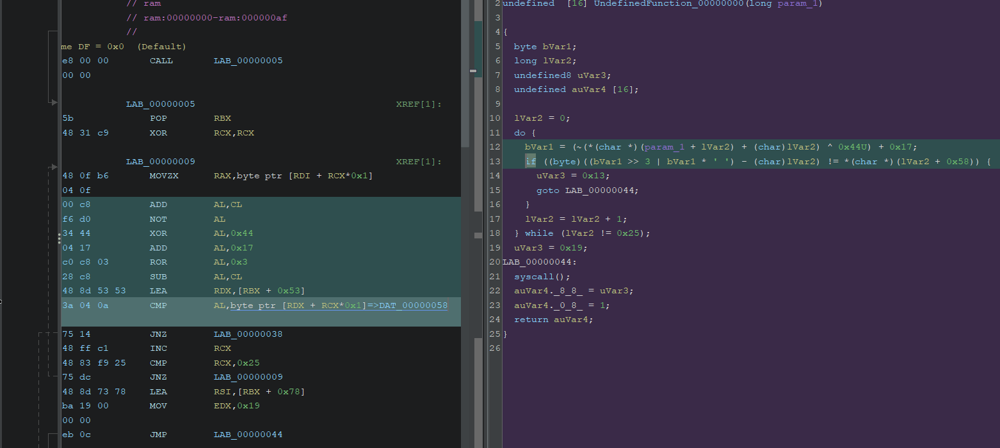Có thể thấy shellcode thực hiện loop với counter là biến lVar2 chạy từ 0 đến 36. Ở mỗi vòng loop thì từng ký tự trong chuỗi đầu vào sẽ được tính toán và so sánh, nếu sai thì chương trình jmp tới địa chỉ khác. Tới đây thì chúng ta cũng hiểu sơ sơ về shellcode này. Phần mình highlight bên trái là đoạn assembly liên quan tới tính toán và so sánh, đối với đoạn này thì đọc assembly sẽ dễ hiểu hơn.
Phần còn lại chỉ là trích xuất byte string được so sánh và viết code Python bruteforce từng ký tự một. Code: Here